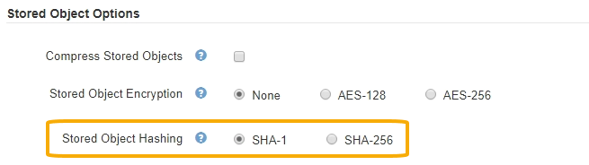

Solicitar cambios en el documento
Solicitar cambios en el documento Editar en GitHub
Editar en GitHub Guía del colaborador
Guía del colaborador
Se proporciona el idioma español mediante traducción automática para su comodidad. En caso de alguna inconsistencia, el inglés precede al español.
Configurar los hash de objetos almacenados
Colaboradores
La opción de hash de objetos almacenados especifica el algoritmo de hash utilizado para verificar la integridad del objeto.
Lo que necesitará
-
Ha iniciado sesión en Grid Manager mediante un navegador web compatible.
-
Tiene permisos de acceso específicos.
Acerca de esta tarea
De forma predeterminada, los datos de objeto se procesan mediante el algoritmo SHA-1. El algoritmo SHA-256 requiere recursos de CPU adicionales y generalmente no se recomienda para la verificación de integridad.

|
Si cambia este ajuste, el nuevo ajuste tardará aproximadamente un minuto en aplicarse. El valor configurado se almacena en caché para el rendimiento y el escalado. |
Pasos
-
Seleccione CONFIGURACIÓN > sistema > Opciones de cuadrícula.
-
En la sección Opciones de objeto almacenado, cambie el hash de objetos almacenados a SHA-1 (predeterminado) o SHA-256.

-
Seleccione Guardar.